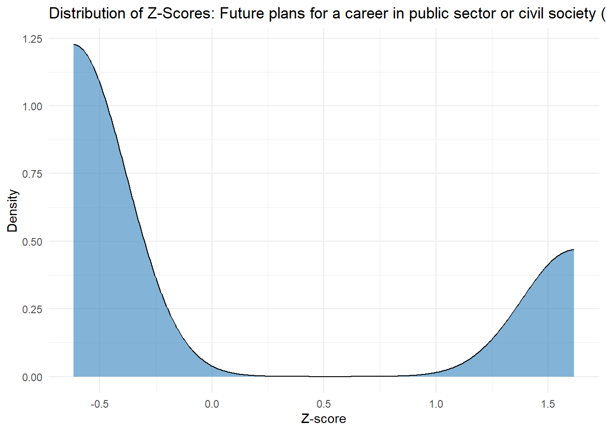
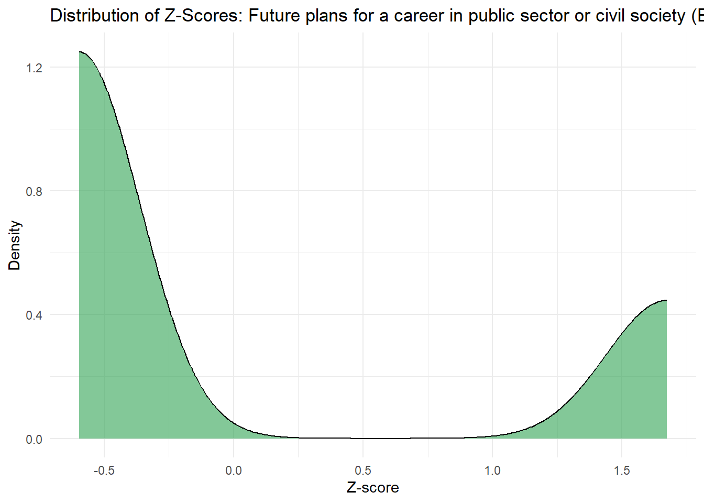
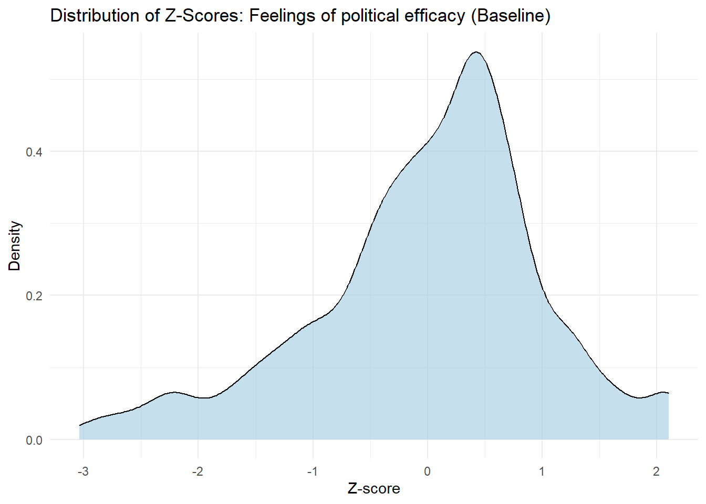
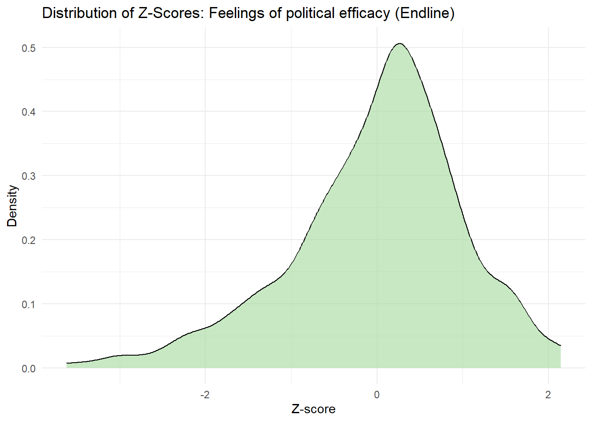

── Conflicts ────────────────────────────────────────── tidyverse_conflicts() ──
✖ dplyr::filter() masks ggdag::filter(), stats::filter()
✖ dplyr::lag() masks stats::lag()
ℹ Use the conflicted package (<http://conflicted.r-lib.org/>) to force all conflicts to become errors
library(gt)library(modelsummary)library(fixest)
Warning: package 'fixest' was built under R version 4.4.3
# read-in datadat =read_csv("https://raw.githubusercontent.com/jrspringman/psci3200-globaldev/main/workshops/aau_survey/clean_endline_did.csv" ) %>%# clean home region variablemutate(q8_baseline =ifelse(q8_baseline =="Southern Nations, Nationalities, and Peoples Region", "SNNPR", q8_baseline), q8_baseline =str_remove(q8_baseline, " Region"))
Rows: 825 Columns: 280
── Column specification ────────────────────────────────────────────────────────
Delimiter: ","
chr (106): response_id, user_language, q2, q11_1, q11_2, q11_3, q11_4, q12, ...
dbl (158): treatment_status, q13_1_1, q13_2_1, q13_3_1, q13_4_1, q13_5_1, q1...
lgl (16): q27_1, q27_3, border_ethnic, border_resource, list_treat, q82_spl...
ℹ Use `spec()` to retrieve the full column specification for this data.
ℹ Specify the column types or set `show_col_types = FALSE` to quiet this message.
# create color palette for plottingpalette = MetBrewer::met.brewer(name ="Cross")
#In this function, I select for the baseline and endline of all the variables we are interested in, renaming them to more descriptive variable names.panel_survey <- dat |>select(response_id, treatment_status, user_language, gender = q3_baseline, civsoc_career_bl = q26_civ_baseline, civsoc_career_el = q26_civ, politics_career_bl = q26_politics_baseline, politics_career_el = q26_politics, pubsec_career_bl = q26_public_baseline, pubsec_career_el = q26_public, office_plan_bl = q27_1_baseline, office_plan_el = q27_1, ngo_plan_bl = q27_3_baseline, ngo_plan_el = q27_3, belief_self_poschange_bl = q17_3_baseline, belief_self_poschange_el = q17_3, belief_youthengage_bl = q17_1_baseline, belief_youthengage_el = q17_1, belief_youth_poschange_bl = q17_2_baseline, belief_youth_poschange_el = q17_2)
Creating Index Variables
Additive v. Index Variables
An additive index is the cumulative value of other variables by simply adding them together. Thus, for an additive index to be significant, it’s important that the variables that are being combined are on the same scale. Additive index variables are useful when we’re interested in the cumulative amount of something.
An average Z-scores refers to an average of a set of z-scores across variables. A z-score is a standardized measurement based on a mean of 0 and a standard deviation of 1. Averaged z-scores are useful when variables are measured on different scales or when variables cannot be summed.
panel_survey <- panel_survey %>%#creating the additive index variablemutate(index_civsoc_pubsec_plan_bl =as.numeric(pubsec_career_bl) +as.numeric(civsoc_career_bl), index_civsoc_pubsec_plan_el =as.numeric(pubsec_career_el) +as.numeric(civsoc_career_el) ) %>%#creating the z-score versions of each variable mutate(z_civsoc_pubsec_plan_bl =scale(as.numeric(index_civsoc_pubsec_plan_bl)), z_civsoc_pubsec_plan_el =scale(as.numeric(index_civsoc_pubsec_plan_el)), z_pol_efficacy_bl =scale(rowMeans(cbind( belief_youth_poschange_bl, belief_self_poschange_bl, belief_youthengage_bl ), na.rm =TRUE)), z_pol_efficacy_el =scale(rowMeans(cbind( belief_youth_poschange_el, belief_self_poschange_el, belief_youthengage_el ), na.rm =TRUE)) )
#visualizing the code# Public Sector Career (Baseline)ggplot(panel_survey, aes(x = z_civsoc_pubsec_plan_bl)) +geom_density(fill ="#3182bd", alpha =0.6) +labs(title ="Distribution of Z-Scores: Future plans for a career in public sector or civil society (Baseline)",x ="Z-score",y ="Density" ) +theme_minimal()
Warning: Removed 7 rows containing non-finite outside the scale range
(`stat_density()`).

# Civil Society Career (Baseline)ggplot(panel_survey, aes(x = z_civsoc_pubsec_plan_el)) +geom_density(fill ="#31a354", alpha =0.6) +labs(title ="Distribution of Z-Scores: Future plans for a career in public sector or civil society (Endline)",x ="Z-score",y ="Density" ) +theme_minimal()
Warning: Removed 4 rows containing non-finite outside the scale range
(`stat_density()`).

# Public Sector Career (Endline)ggplot(panel_survey, aes(x = z_pol_efficacy_bl)) +geom_density(fill ="#9ecae1", alpha =0.6) +labs(title ="Distribution of Z-Scores: Feelings of political efficacy (Baseline)",x ="Z-score",y ="Density" ) +theme_minimal()
Warning: Removed 5 rows containing non-finite outside the scale range
(`stat_density()`).

# Civil Society Career (Endline)ggplot(panel_survey, aes(x = z_pol_efficacy_el)) +geom_density(fill ="#a1d99b", alpha =0.6) +labs(title ="Distribution of Z-Scores: Feelings of political efficacy (Endline)",x ="Z-score",y ="Density" ) +theme_minimal()
Warning: Removed 8 rows containing non-finite outside the scale range
(`stat_density()`).

According to these graphs, the treatments didn’t result in significant changes in feelings of political efficacy or future career plans. However, we can see a slight increase in respondents post-treatment who wanted to pursue a career in the public sector or civil society as well as an increase in beliefs in public efficacy.
Estimating Models
panel_survey <- panel_survey %>%select(response_id, gender, z_civsoc_pubsec_plan_bl, z_civsoc_pubsec_plan_el, z_pol_efficacy_bl, z_pol_efficacy_el)model <-lm(z_civsoc_pubsec_plan_bl ~ z_pol_efficacy_bl, data = panel_survey)modelsummary(model,stars =TRUE,title ="Regression of Future Plans on Political Efficacy (Baseline)",output ="markdown")
Regression of Future Plans on Political Efficacy (Baseline)
(1)
+ p < 0.1, * p < 0.05, ** p < 0.01, *** p < 0.001
(Intercept)
0.001
(0.035)
z_pol_efficacy_bl
0.120***
(0.035)
Num.Obs.
813
R2
0.014
R2 Adj.
0.013
AIC
2301.4
BIC
2315.5
Log.Lik.
-1147.678
RMSE
0.99
Interpretation
\(\alpha\) When political efficacy is at zero (which is the sample mean of the political efficacy index) the predicted future plans for civil society/public sector is 0.001
\(\beta_1\)This means that higher political efficacy at baseline is positively and significantly associated with stronger future plans for civil society/public sector work.
This model asserts that beliefs in political efficacy is related to higher aspirations to work in civil society and public sector. This assumes that there is not a confounding variable that influences both political efficacy and civil society/public sector. In realty however, education, class, and gender can all impact both one’s feelings of political efficacy as well as their career prospects.
Regression 2:
#creating a binary variable using if else panel_survey <- panel_survey %>%mutate(b_pol_efficacy_bl =ifelse(z_pol_efficacy_bl >=mean(z_pol_efficacy_bl, na.rm =TRUE), 1, 0),b_pol_efficacy_el =ifelse(z_pol_efficacy_el >=mean(z_pol_efficacy_el, na.rm =TRUE), 1, 0) )#linear regression with interaction termsmodel_interaction <-lm(z_civsoc_pubsec_plan_bl ~ b_pol_efficacy_bl * gender, data = panel_survey)# Display with modelsummarylibrary(modelsummary)modelsummary(model_interaction,stars =TRUE,title ="Interaction Between Political Efficacy and Gender (Baseline)",output ="markdown")
Interaction Between Political Efficacy and Gender (Baseline)
(1)
+ p < 0.1, * p < 0.05, ** p < 0.01, *** p < 0.001
(Intercept)
-0.146
(0.095)
b_pol_efficacy_bl
0.224+
(0.136)
genderMale
0.008
(0.115)
b_pol_efficacy_bl × genderMale
0.025
(0.159)
Num.Obs.
813
R2
0.015
R2 Adj.
0.011
AIC
2305.1
BIC
2328.6
Log.Lik.
-1147.526
RMSE
0.99
Interpretation
\(\alpha\): The expected future plans score fore women with low political efficact is slightly below the mean at the baseline
\(β1 = 0.224\) is the effect of political efficacy on future plans at the baseline This indicates that for women (which we are considering the base gender) a 1-unit increase in political efficacy is associated with a positive and marginally significant increase (at the 10% level) which suggests political efficacy has a positive relationship with future plans, but its not strongly conclusive
\(\beta2 = 0.008\) This coefficient reflects the effect of gender on future civil society/public sector plans when poliical efficacy is held constant. The coefficient is not significant, meaning that gendere does not have a significant effect on future plans in this model.
\(\beta_3 = 0.025\) the interaction term shows how the relationship between political efficacy and future plans differs for men in comparison to women. The coefficient of 0.025 suggests that men with higher political efficacy are slightly more likely to have increased future plans compared to females, but the effect is not statistically significant.
However, the model fit is relatively weak, explaining only a small fraction of the variance. Gender it seems does not inform the relationship between political efficacy and career goals.
Long Panel
#creating a long panel that creates two rows for each response_id. all variables that end with _bl (indicating baseline) and _el (indicating endline) are split into a second row. a new variable called wave indicates whether the data is from the endline wave or the baseline wavepanel_long <- panel_survey %>%pivot_longer(cols =contains("z_") |contains("b_"),names_to =c(".value", "wave"),names_pattern ="(.*)_(bl|el)" ) %>%mutate(wave =ifelse(wave =="bl", "baseline", "endline"))#creating a fixed effects modelmod_fe <-feols( z_civsoc_pubsec_plan ~ b_pol_efficacy | response_id, # pipe syntax for fixed effectsdata = panel_long,cluster =~response_id)
NOTE: 22 observations removed because of NA values (LHS: 11, RHS: 13).
modelsummary(mod_fe, stars =TRUE, title ="Fixed Effects: Political Efficacy and Career",output ="markdown")
Fixed Effects: Political Efficacy and Career
(1)
+ p < 0.1, * p < 0.05, ** p < 0.01, *** p < 0.001
b_pol_efficacy
-0.058
(0.057)
Num.Obs.
1628
R2
0.748
R2 Adj.
0.490
R2 Within
0.001
R2 Within Adj.
-0.000
AIC
4024.6
BIC
8475.5
RMSE
0.50
Std.Errors
by: response_id
FE: response_id
X
Interpretation:
β1 = -0.058
This tells us that, within individuals over time, those whose political efficacy increased above the sample mean had a 0.058 standard deviation decrease in their future plans index.
The sign is negative, which is counterintuitive if we expected political efficacy to increase interest in public/civic careers, based on our past models
However, the standard error is 0.057, and the coefficient is not statistically significant (no stars), meaning this effect could be due to chance.
By applying fixed effects, when we control for the individual we don’t see a positive nor significant correlation between political efficacy and career aspirations in civil society or the public sector.